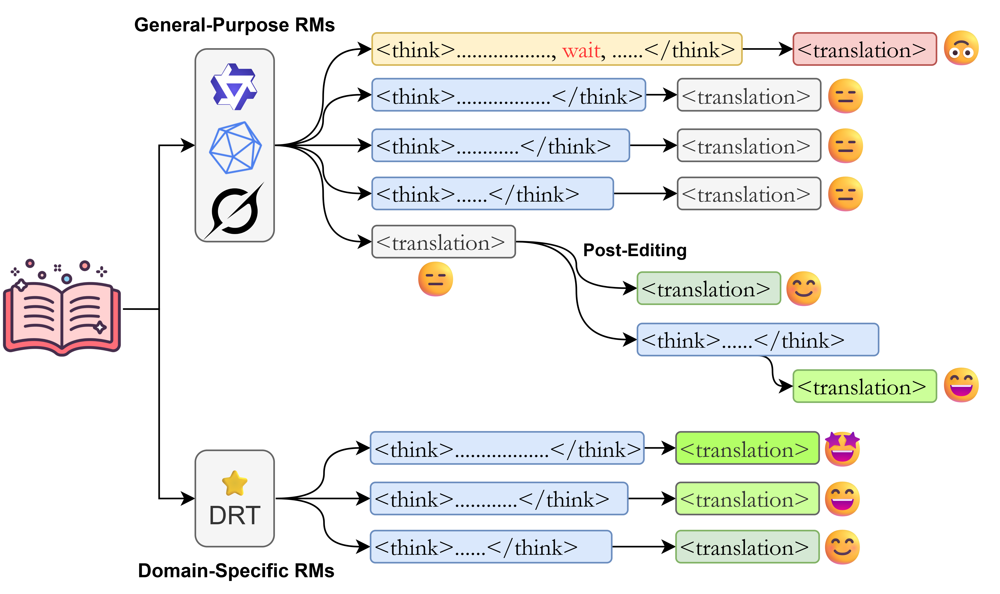

Abstract
Test-time scaling (TTS) has enhanced the performance of Reasoning Models (RMs) on various tasks such as math and coding, yet its efficacy in machine translation (MT) remains underexplored. This paper investigates whether increased inference-time computation improves translation quality. We evaluate 12 RMs across a diverse suite of MT benchmarks spanning multiple domains, examining three scenarios: direct translation, forced-reasoning extrapolation, and post-editing. Our findings show that for general-purpose RMs, TTS provides limited and inconsistent benefits for direct translation, with performance quickly plateauing. However, the effectiveness of TTS is unlocked by domain-specific fine-tuning, which aligns a model's reasoning process with task requirements, leading to consistent improvements up to an optimal, self-determined reasoning depth. We also find that forcing a model to reason beyond its natural stopping point consistently degrades translation quality. In contrast, TTS proves highly effective in a post-editing context, reliably turning self-correction into a beneficial process. These results indicate that the value of inference-time computation in MT lies not in enhancing single-pass translation with general models, but in targeted applications like multi-step, self-correction workflows and in conjunction with task-specialized models.

Overview
This paper investigates the application of test-time scaling (TTS) to Reasoning Models (RMs) for Machine Translation. We distinguish between two TTS workflows: Direct Translation (single-pass Chain-of-Thought scaling) and Post-Editing (compute-scaled self-correction). We structure our investigation through three core research questions:
- RQ1: How effective is test-time scaling for MT? Examining whether increased inference computation reliably boosts translation quality across general-purpose and fine-tuned MT-specific RMs.
- RQ2: Does extrapolation by inserting "wait" forcibly help? Investigating if overriding models' natural stopping points to scale up computation enhances or hinders performance.
- RQ3: Does test-time scaling work in post-editing? Evaluating TTS in self-correction scenarios, assessing its role in refining initial translations with specific compute budgets.
Key Findings
-
1. General-Purpose Models Show Limited Gains
For general-purpose RMs without specific in-domain training, TTS provides limited and inconsistent benefits for direct machine translation. After small initial improvements at very low budgets, performance plateaus across metrics and datasets. -
2. In-Domain Fine-Tuning Unlocks TTS
The effectiveness of TTS is unlocked by domain-specific fine-tuning. For models fine-tuned on specific domain data, performance improves with budget and saturates once models naturally stop increasing their internal token usage, suggesting an emergent alignment between optimal reasoning depth and task demands. -
3. Forced Extrapolation Degrades Performance
Forcing a model to reason by inserting a single "wait" token beyond its natural stopping point consistently degrades translation quality, highlighting the importance of the model's intrinsic deliberation process. -
4. TTS is Highly Effective for Post-Editing
TTS is highly effective in a post-editing context. It reliably elevates translation quality above the original baseline, turning self-correction into a beneficial process, especially for mid-sized models paired with adequate computational budgets.
BibTeX
@inproceedings{li-etal-2026-test,
title = "Test-Time Scaling of Reasoning Models for Machine Translation",
author = {Li, Zihao and Ji, Shaoxiong and Tiedemann, J{\"o}rg},
editor = "Demberg, Vera and Inui, Kentaro and Marquez, Llu{\'i}s",
booktitle = "Proceedings of the 19th Conference of the {E}uropean Chapter of the {A}ssociation for {C}omputational {L}inguistics (Volume 1: Long Papers)",
month = mar,
year = "2026",
address = "Rabat, Morocco",
publisher = "Association for Computational Linguistics",
url = "https://aclanthology.org/2026.eacl-long.133/",
doi = "10.18653/v1/2026.eacl-long.133",
pages = "2902--2917",
ISBN = "979-8-89176-380-7",
abstract = "Test-time scaling (TTS) has enhanced the performance of Reasoning Models (RMs) on various tasks such as math and coding, yet its efficacy in machine translation (MT) remains underexplored. This paper investigates whether increased inference-time computation improves translation quality. We evaluate 12 RMs across a diverse suite of MT benchmarks spanning multiple domains, examining three scenarios: direct translation, forced-reasoning extrapolation, and post-editing. Our findings show that for general-purpose RMs, TTS provides limited and inconsistent benefits for direct translation, with performance quickly plateauing. However, the effectiveness of TTS is unlocked by domain-specific fine-tuning, which aligns a model{'}s reasoning process with task requirements, leading to consistent improvements up to an optimal, self-determined reasoning depth. We also find that forcing a model to reason beyond its natural stopping point consistently degrades translation quality. In contrast, TTS proves highly effective in a post-editing context, reliably turning self-correction into a beneficial process. These results indicate that the value of inference-time computation in MT lies not in enhancing single-pass translation with general models, but in targeted applications like multi-step, self-correction workflows and in conjunction with task-specialized models."
}